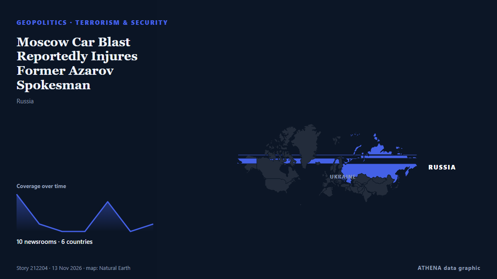

Terrorism & security
SponsoredPresented by  Cybernetics and Artificial Intelligence Lab Welcome to the Cybernetics and Artificial Intelligence Laboratory, established at the Department of Business Administration of the National and Kapodistrian University of Athens. The lab is headed by Professor Dimitrios Thomakos. The lab aims to do research that can be published in top venues. Our research uses tools and methods of Artificial Intelligence, and lies in the following areas: - Forecasting - Decision making - Cyber security - Finance We are always looking forward to collaborating with exceptional students!
Cybernetics and Artificial Intelligence Lab Welcome to the Cybernetics and Artificial Intelligence Laboratory, established at the Department of Business Administration of the National and Kapodistrian University of Athens. The lab is headed by Professor Dimitrios Thomakos. The lab aims to do research that can be published in top venues. Our research uses tools and methods of Artificial Intelligence, and lies in the following areas: - Forecasting - Decision making - Cyber security - Finance We are always looking forward to collaborating with exceptional students!
| 31 Oct | 0 |
|---|---|
| 1 Nov | 0 |
| 2 Nov | 0 |
| 3 Nov | 0 |
| 4 Nov | 0 |
| 5 Nov | 0 |
| 6 Nov | 0 |
| 7 Nov | 0 |
| 8 Nov | 0 |
| 9 Nov | 0 |
| 10 Nov | 3 |
| 11 Nov | 6 |
| 12 Nov | 3 |
| 13 Nov | 2 |

Moscow Car Blast Reportedly Injures Former Azarov Spokesman
A Toyota Fortuner exploded in southern Moscow on Friday, reportedly seriously injuring Sergei Zavorotny, a Russian writer who previously worked for former Ukrainian Prime Minister Mykola Azarov. from Kyiv Post
Doctor Behind Mass Shooting in D.C., Police Say
(MedPage Today) -- Emergency physician Matt Lambert, MD, was named by NBC News as the gunman in Thursday's mass shooting in Washington, D.C., citing law enforcement officials. from MedPage Today
Iran designates Argentina's navy and air force as 'terrorist organisations'
Tehran has designated Argentina’s navy and air force as “terrorist organizations,” Iran’s Foreign Ministry said on Wednesday, in a reciprocal move following Buenos Aires’ designation of the Islamic… from Cyprus Mail
DSP among 10 policemen martyred in Kohat attack
KOHAT: Ten police personnel, including a Deputy Superintendent of Police (DSP) and a Sub-Inspector, were martyred when terrorists opened fire on a police party in the Gumbat area of Kohat on Tuesday. from Business Recorder
US charges 3 men over alleged Iranian-backed plot at UK Fairford air base
The men, including one who is already in jail, face charges over alleged plot at UK air base used in US war on Iran. from Al Jazeera English
US charges three 'Iranian operatives' in UK airbase plot
The US Justice Department has announced charges against three men it described as 'Iranian operatives', including one already in jail, over their role in an alleged terrorist plot at Britain's RAF… from RTÉ News
Former Afghan army man arrested in KP's Tirah for 'terrorist activities' in Pakistan
Former Afghan army soldier Hikmatullah alias Hamza. â Screengrab via YouTube/Geo News Suspect had contacts with militants across the border: Official. Says Hikmatullah had been associated with… from Geo News (English)
Egyptian Court Places 35 Organizations and 36 Individuals on Terrorist Lists
An Egyptian court has ordered on Tuesday, 10 November, the inclusion of 35 organizations and 36 individuals on the country’s lists of terrorist entities and terrorists for a period of five years. from Egyptian Streets
Gunmen kill MACBAN chairman in Taraba
Gunmen have killed the Chairman of the Miyetti Allah Cattle Breeders Association of Nigeria (MACBAN) in Takum Local Government Area of Taraba State, Alhaji Ibrahim Saidu. from Daily Trust